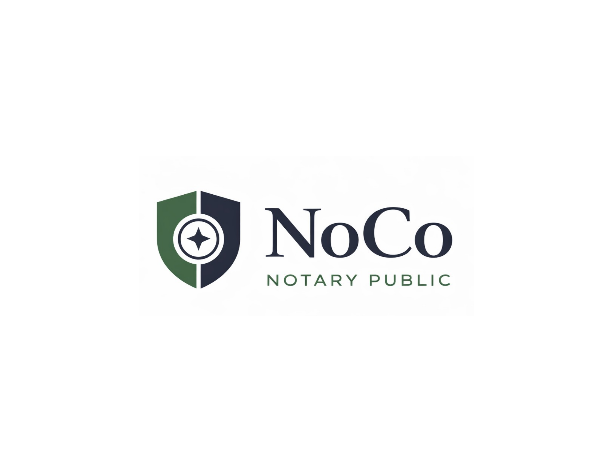

Convenient mobile and remote online notarization serving Northern Colorado with professional, reliable service.
Request an AppointmentConvenient in-person notarization at your home, office, facility, or other agreed location.
Secure online notarization for documents that can be completed remotely, subject to Colorado requirements.
Notary support for businesses, contractors, professionals, and routine document needs.
Mobile notary support for wills, trusts, powers of attorney, advance directives, and related documents.
Professional mobile service for seniors, families, healthcare-related documents, and facility appointments.
Professional signing support for real estate and loan documents. Contact us for a quote and availability.
Per applicable notarial act, subject to Colorado law.
Per applicable electronic notarial act, subject to Colorado law and applicable platform requirements.
Loveland: $15
Fort Collins: $25
Windsor: $25
All other service areas: $35
Evening, weekend, rush, emergency, business, estate-planning, loan-signing, and other specialized appointments may have additional charges. Contact us for a quote.
Notarial fees and travel/service charges are separately disclosed and itemized as applicable.
Serving Northern Colorado, including Loveland, Fort Collins, Windsor, Timnath, Severance, Johnstown, Berthoud, Greeley, Evans, and surrounding communities.
NoCo Notary Public provides convenient, professional notary services throughout Northern Colorado. Our goal is simple: make notarization accessible, dependable, and convenient for individuals, families, businesses, professionals, and organizations.
Whether you need a mobile appointment at your location or a remote online notarization, we focus on professional service, clear communication, and convenient scheduling.
Call or text: 720-701-8015
Email: noconotarypublic@gmail.com